[竹東] 海綸泰式小吃
| 餐廳名稱: | 海綸泰式小吃 |
|---|---|
| 地 址: | 新竹縣竹東鎮東寧路一段67號 |
| 營業時間: | 週一 ~ 周六 11:00–14:00 16:00–20:00 |
| 週日 公休 | |
| 電話 | 03 510 1922 |
海綸泰式小吃本來是竹東燦坤前面一個小鐵皮屋，雖然便宜又好吃，但是那個小空間實在很受不了。 從網路上知道 海綸泰式小吃 搬家已經一陣子了，有稍微擴大一些，多找一些人手，週六晚上， 就決定來拜訪搬家後的海綸泰式小吃。
約六點半到，大爆滿，登記號碼後，乖乖地等。觀察那些客人，似乎本地人不多，大都是背著背包，一群朋友。 感覺是山上的活動結束後，來這裡用餐。 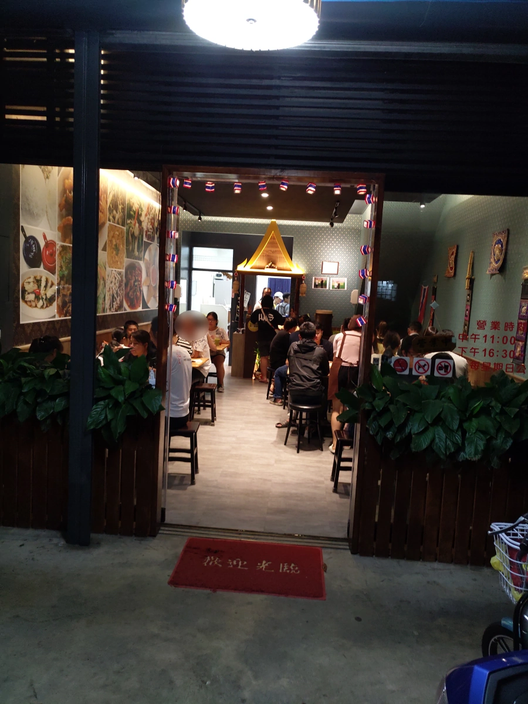
等候的空檔，拍一下招牌。 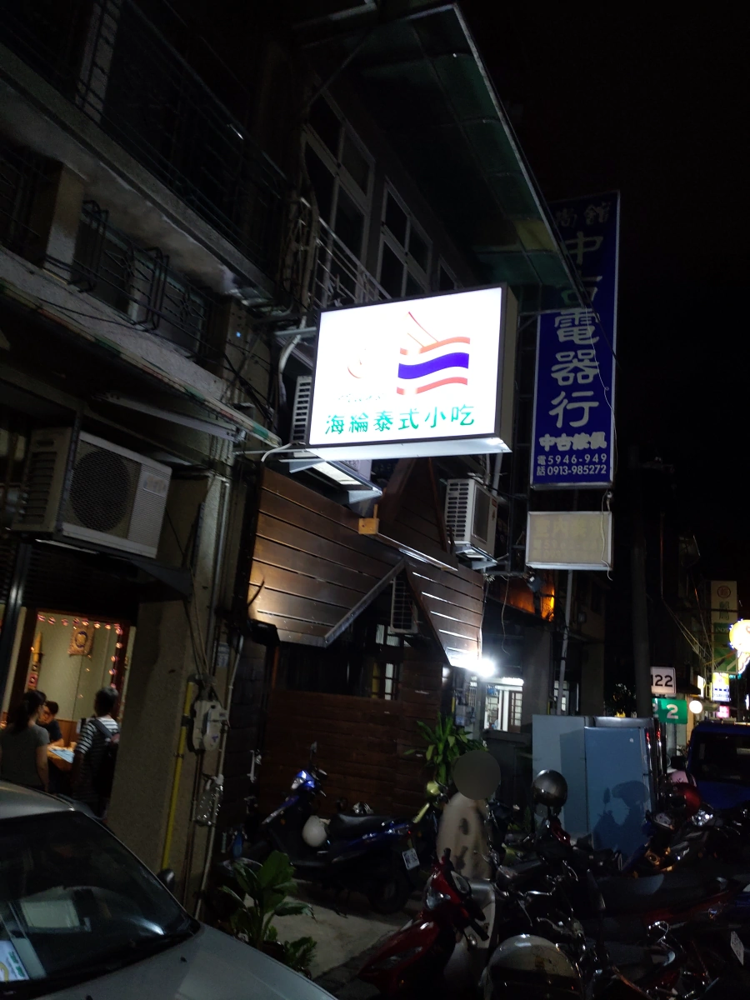
等了30分鐘，終於有座位了。環境比小鐵皮屋時期好多了，走道比較寬了。 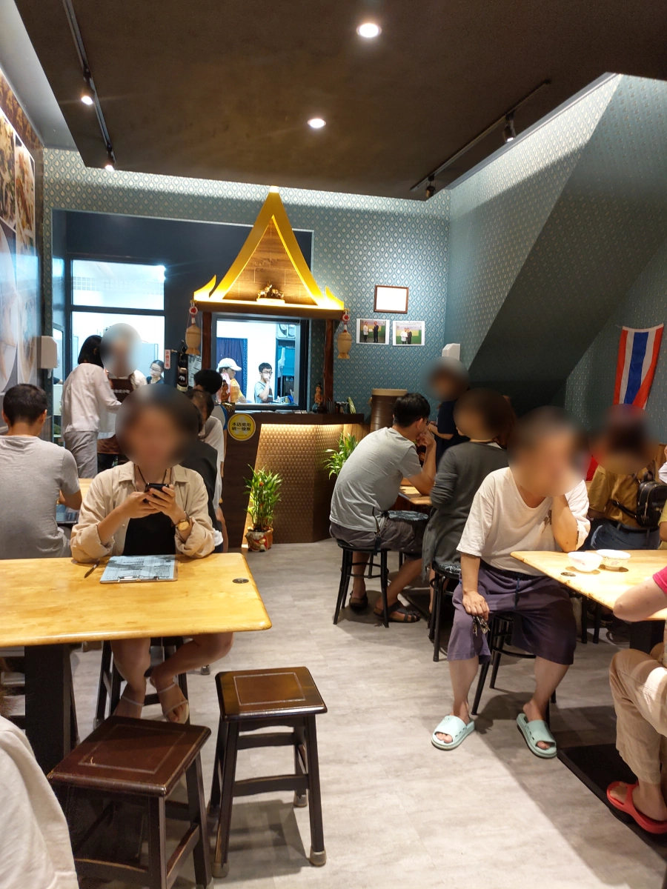
菜單。也不是只有合菜，還有個人餐。有幾個客人就是點個人餐。 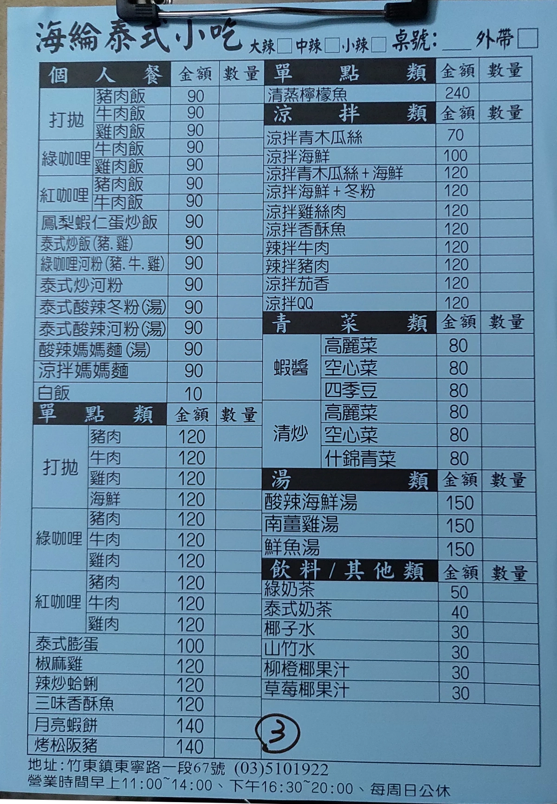
今天準備很多玻璃容器來打包，所以點很多，預備包一些菜，吃個好幾天。飲料最先上， 兩杯泰式奶茶，一杯綠奶茶。問小姐什麼是綠奶茶，她第一個反應竟然是綠奶茶比較貴，真是奇怪的反應。 不過不管了，綠奶茶不常見，點一杯來喝喝。這三杯甜度都夠，都算好喝。 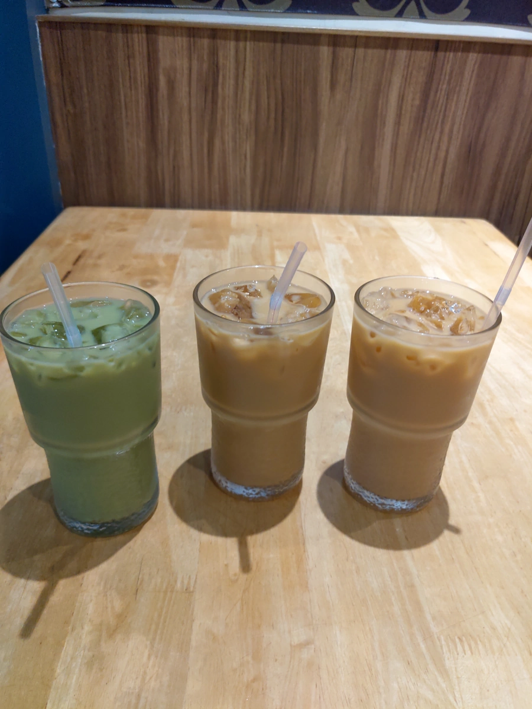
月亮蝦餅，聽說泰國其實沒這道菜，負責烹調的泰國大嬸，不知道做這道菜的時候在想什麼。可能是因為便宜， 味道比一些知名泰國菜餐廳差一些。畢竟知名泰國菜餐廳可能用整尾蝦，比較好的原料，然後賣的貴貴的。 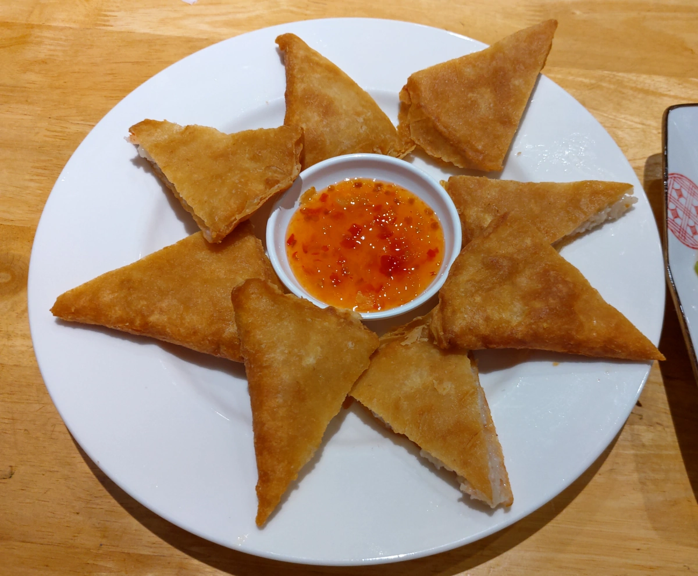
蝦醬空心菜，今天這道菜略失敗，不夠鹹。蝦醬空心菜是很難失敗的，竟然還做成這樣，真是不爽。 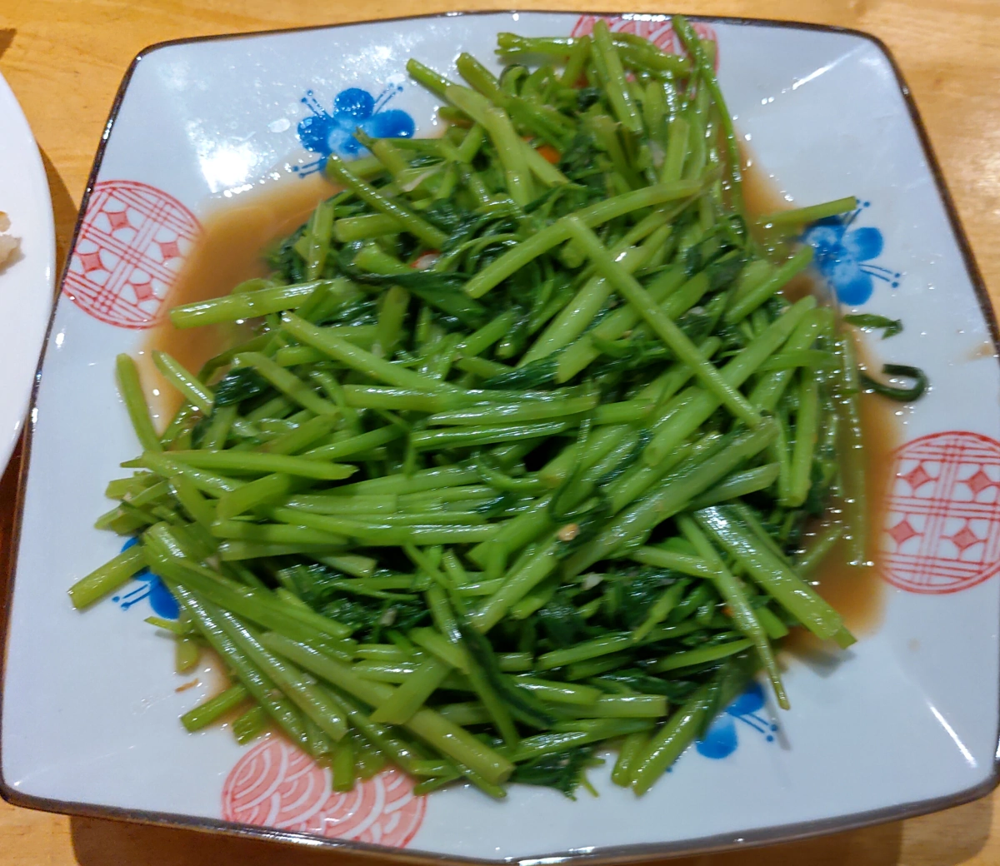
涼拌青木瓜絲加海鮮，個人不愛木瓜，吃幾口而已，應該是正常啦。 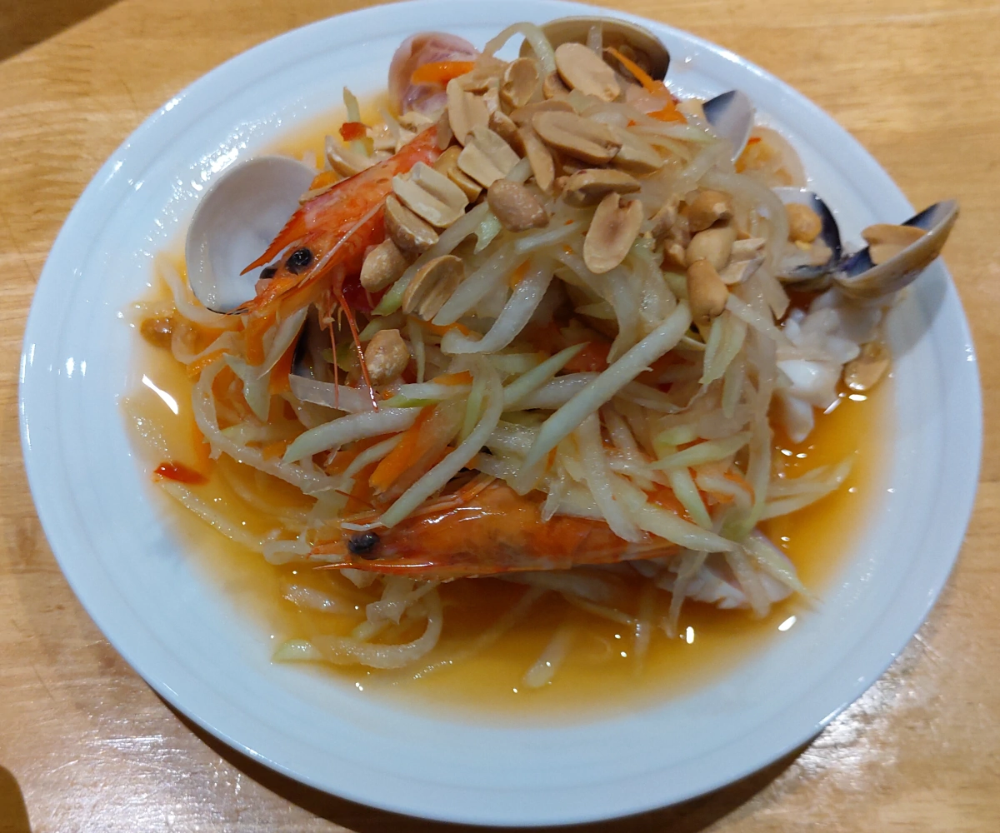
今天最棒的菜，炒河粉。上來時，熱騰騰的，有鑊氣，調味也很好。不過帶回家再熱，就不好吃了，這道菜適合當場吃完。 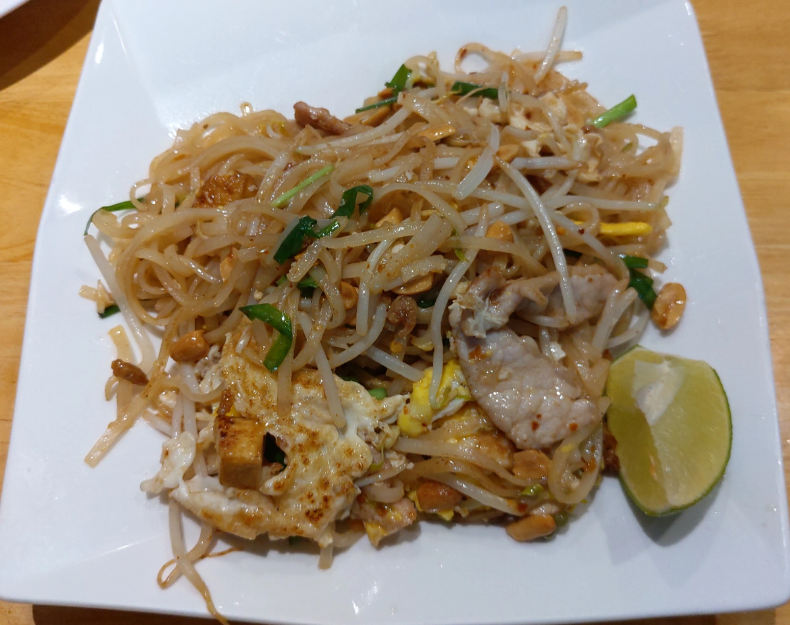
泰式膨蛋，還以為是什麼泰式手法，根本就是普通煎蛋。這個煎蛋還不錯吃。 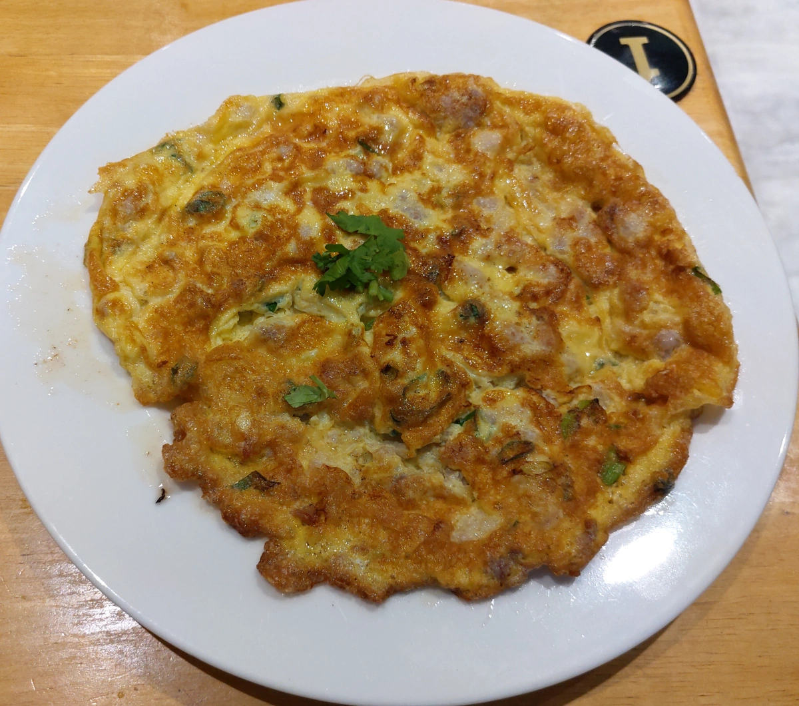
加點的打拋豬，偏辣，也是不錯吃。 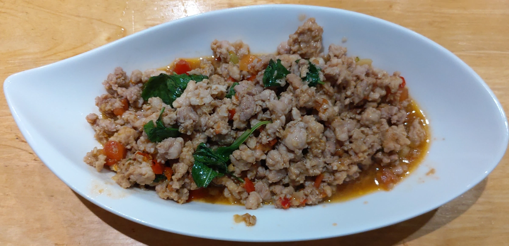
海綸泰式小吃的確便宜又好吃，但是很容易客人太多爆滿，如果不用排隊的話，倒是願意常來吃，只是它很少有客人少的時候。